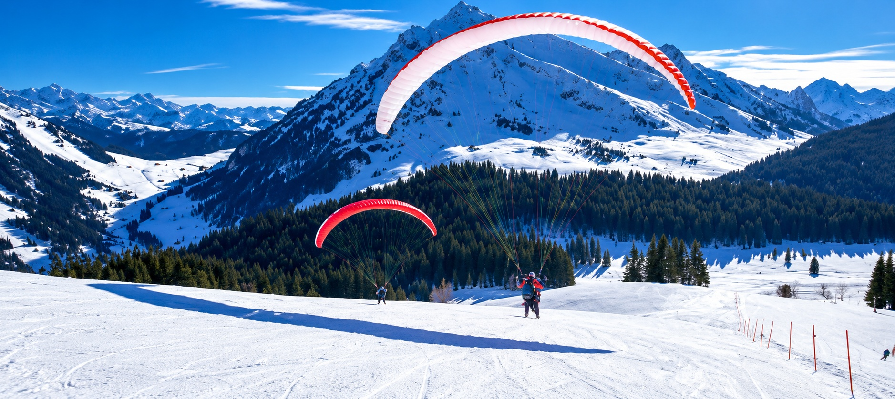

Vol L'Aiglon : baptême de parapente à ski à La Clusaz

Vol L'Aiglon hiver — 35€, vidéo offerte
Un vol d'hiver original et accessible : vous décollez directement à ski depuis le sommet de L'Aiglon, sur le domaine skiable de La Clusaz, pour une centaine de mètres de dénivelé au-dessus des pistes enneigées. C'est une façon simple et ludique de découvrir le parapente à ski, et la vidéo de votre vol est incluse.
- Prix : 35€, vidéo du vol incluse
- Dénivelé : 100 m
- Décollage : à ski, directement au sommet de L'Aiglon
- Public : skieurs (forfait de ski obligatoire : l'accès au décollage se fait par le téléski L'Aiglon)
- Période : hiver uniquement
- Moment de la journée : selon planning
⚠️ Forfait de ski obligatoire : la montée au décollage se fait par le téléski L'Aiglon. Rendez-vous au sommet, à droite à l'arrivée du téléski, ou en dessous du restaurant Le 1647.
Paiement sur place ou par chèque (encaissé après le vol).
Comment se déroule le vol L'Aiglon ?
- Rendez-vous au sommet : montez avec le téléski L'Aiglon, skis aux pieds, et retrouvez votre moniteur à droite à l'arrivée, ou rejoignez-le en dessous du restaurant Le 1647.
- Préparation : le moniteur vous équipe de la sellette et du casque, puis vous explique simplement le décollage. Vous gardez vos skis pendant tout le vol.
- Décollage à ski : quelques mètres de glisse dans la pente, la voile se gonfle et vous quittez la neige en douceur.
- Le vol : vous survolez les pistes de La Clusaz, face à la chaîne des Aravis. Votre moniteur, diplômé d'État, pilote le parapente. Le vol est filmé avec une GoPro fixée sur une perche attachée, que vous tenez vous-même sur certaines phases du vol.
- L'atterrissage : retour sur la neige, toujours à ski, puis vous repartez skier avec votre vidéo en souvenir.
Pour qui est ce baptême de parapente à ski ?
Le vol L'Aiglon s'adresse aux skieurs qui veulent essayer le parapente pour la première fois, avec ou sans sensations, au choix. Il suffit d'être à l'aise à ski pour monter au sommet et glisser quelques mètres au décollage. C'est aussi une belle idée de cadeau pour un enfant ou un ado skieur : le vol est court, accessible, et la vidéo permet de le revivre en famille.
Envie d'un vol plus long ? Nos autres formules d'hiver offrent davantage de dénivelé : Beauregard, Crêt du Loup ou l'Aiguille, pour un vol depuis les sommets du domaine.
Que prévoir pour votre vol ?
- Votre forfait de ski et votre équipement de ski habituel
- Une tenue chaude : veste, gants et masque ou lunettes de soleil
- Le casque de vol est fourni par le moniteur
Questions fréquentes sur le vol L'Aiglon
Faut-il savoir skier pour faire ce vol ?
Oui. Le décollage et l'atterrissage se font à ski, et il faut monter au sommet de L'Aiglon par le téléski, avec un forfait de ski. Il suffit d'être à l'aise à ski.
La vidéo est-elle vraiment incluse ?
Oui, pour le vol L'Aiglon la vidéo de votre vol est comprise dans le prix de 35€. Elle est filmée avec une GoPro sur perche, que vous tenez sur certaines phases du vol.
Que se passe-t-il en cas de mauvais temps ?
Si le vent, la visibilité ou les conditions ne permettent pas de voler en sécurité, le vol est reporté ou annulé. Nous vous recontactons pour trouver un autre créneau.
Peut-on offrir ce vol ?
Oui, le bon cadeau du vol L'Aiglon est téléchargeable en PDF, prêt à imprimer.
Entraînez-vous sur le jeu Aravis Parapente
Avant de voler pour de vrai, essayez le vol L'Aiglon virtuel dans notre jeu 3D de parapente gratuit. Le jeu est une fiction qui ne reflète pas le vol réel, mais il intègre la vidéo d'un vrai décollage.
Voir toutes nos formules
Découvrez l'ensemble de nos baptêmes de parapente biplace, été comme hiver, sur notre page Vols / Bon cadeau, ou contactez-nous directement pour être conseillé sur la formule la plus adaptée : Sam Porret, 06 88 07 04 72 ou Julien Wirtz, 06 82 95 85 42.